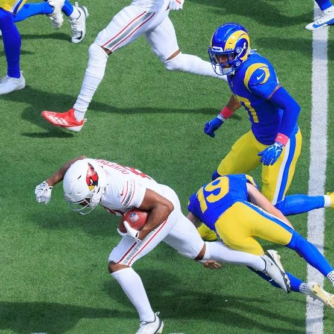

Another week of games means another week of NFL and League of NARPS headlines. We are six weeks through the season, and I am still not sure what to make of it. The Browns are 4-2 while the Rams are 2-4. Even though the Chiefs remain undefeated, it feels like they are still under the radar. The Chargers are horrendous, and somehow the Bengals are in last place in the AFC North even though they are 3-2.
The injuries this season seem worse than in years past, as League of NARPS teams rostered 22 inactive players this past week. Then on Monday we learned Jalen Hurts is out for the season with blood clots. To add insult to injury, the Rams’ newly signed kicker tore his ACL after being truck-sticked while attempting a tackle on a kick return. Then, both the Ravers and Legends were merely points away from a win in Week 6 when Terry McLaurin and Mike Evans left the Monday Night Football game with injuries. Normally, we could turn to the waiver wire, but the prospects are more barren than the Sahara Desert.
That being said, we had some of our most competitive matchups last week. The Stallions eked out a 73.7 to 67.3 win over the Free Agents even though they started two Giants RBs (Skattebo and Harris) who combined for 0.2 points. The Piemakers secured a win against the Legends, winning by a margin of 1.8 points. The Fantasy Football Team made a comeback on MNF to beat the Gangstas by 5.2 points. Finally, the ACLiens got a much-needed win over the Ravers, just beating them out by 5.4 points.
Meanwhile, the Deplorables continued their march with an easy win over Business as Usual. The Money Badgers are trying to prove they are a true contender (even though they have by far the fewest points against) by shutting down the power at the Prino residence. The Badgers moved up eight spots to 4th place after dropping seven spots last week. The battle for the 6th place spot (determined by total points scored) remains competitive, as the Ravers currently lead the Free Agents by 7.8 points. The Ravers have sat in this position for the past three weeks despite being 2-4.
Four teams have 4 or more wins, and another four teams have 3 wins. The middle of the pack remains bunched up, and I would expect to see some teams swing up and down over the next several weeks. There is still plenty of time for teams to make their playoff push, especially since injuries happen with every blink of an eye and bye weeks will make teams shift their lineups. Week 7 looms, and its conclusion will officially mark the halfway point of the regular season. For the next newsletter, we’ll do a deeper dive into each team and the 2026 season as a whole. For now, don’t forget to set your lineups, enjoy the games, and cheer on your players.
- The Commish
| # | Team | Record | Pct | PF | PA | Median Record | All-Play Record | Top Weekly Scorer | Payouts |
|---|---|---|---|---|---|---|---|---|---|
| 1 – | The Deplorables Paid | 5-1 | 0.833 | 728.8 | 631.6 | 5-1 | 51-15 | 3 | $75 |
| 2 – | Prino's Powerhouse | 4-2 | 0.667 | 609.9 | 576.1 | 3-3 | 38-28 | 1 | $25 |
| 3 ▲1 | Kareem Pie Paid | 4-2 | 0.667 | 597.6 | 581.8 | 4-2 | 39-27 | 1 | $25 |
| 4 ▲8 | Money Badgers Paid | 4-2 | 0.667 | 536.6 | 512.3 | 2-4 | 25-41 | 1 | $25 |
| 5 ▲2 | Fantasy Football Team Paid | 3-3 | 0.500 | 614.0 | 611.3 | 4-2 | 43-23 | - | - |
| 6 – | Route 2 Ravers Paid | 2-4 | 0.333 | 613.5 | 601.2 | 4-2 | 36-30 | - | - |
| 7 ▼4 | Free Agents Paid | 3-3 | 0.500 | 605.7 | 606.6 | 4-2 | 34-32 | - | - |
| 8 ▼3 | George's Gangstas Paid | 3-3 | 0.500 | 585.3 | 596.9 | 3-3 | 36-30 | - | - |
| 9 – | Lincoln Legends Paid | 2-4 | 0.333 | 559.0 | 595.1 | 3-3 | 30-36 | - | - |
| 10 ▲1 | ACLiens | 2-4 | 0.333 | 540.4 | 584.2 | 1-5 | 22-44 | - | - |
| 11 ▼3 | Arabian Stallions Paid | 3-3 | 0.500 | 540.2 | 565.9 | 1-5 | 23-43 | - | - |
| 12 ▼2 | Business as Usual Paid | 1-5 | 0.167 | 527.9 | 595.9 | 2-4 | 19-47 | - | - |
Note: seeds 1–5 are set by record, seed 6 goes to the highest-scoring team outside the top 5, and seeds 7–12 are ordered by points scored (see the 2026 season page).
How far each team is ahead of the season’s lowest scorer after every week. Hover a line or dot for the exact lead and running point total.
2026 regular season, Weeks 1–6. See the 2026 season page for the latest version.
League of NARPS Newsletter · Vol. 9, No. 6 · Back to Volume 9 · All Newsletters